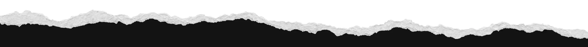
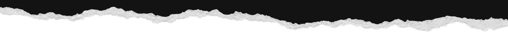

Fuera del mapa: la cultura que se sostiene sin fondos ni foco
Recorrimos centros comunitarios en cinco regiones para entender cómo se programa, se financia y se cuida la cultura lejos de Santiago.



Obras, conciertos, muestras y funciones que nos parecen valiosas.
No hay eventos de esta disciplina en las próximas semanas.
Ver cartelera completa
Anómala es una multiplataforma cultural y un laboratorio territorial. Periodismo, creación y pensamiento crítico.
Conoce quiénes somosLo que publicamos, directo a tu bandeja.